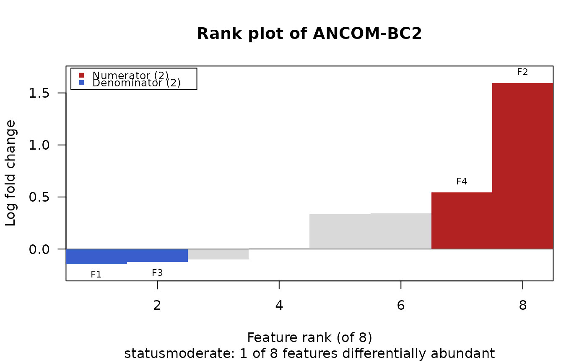
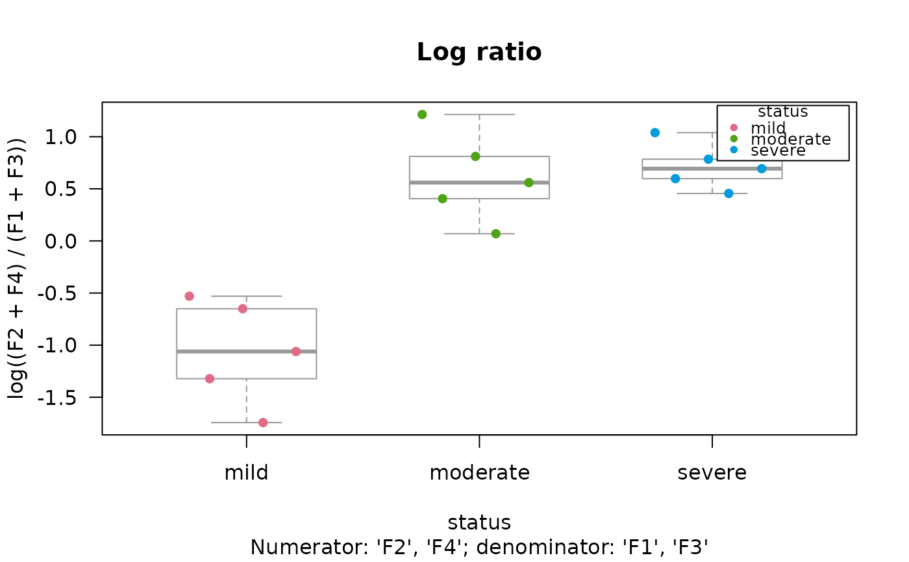

The n highest- and n lowest-ranked features of a differential
abundance result or of an ordination's loadings, as the numerator and
denominator of log_ratio() or balance(): Qurro's "autoselection"
(Fedarko et al. 2020), after the reference frames of Morton et al.
(2019).
Arguments
- x
What ranks the features:
a differential abundance result with a signed effect: from
dirmult_ttest(),ancombc(),ancombc2(),da_ttest(),da_wilcoxon(),da_lm(), orlinda()(any method whoseeffectcolumnlist_da_tests()names); its effect column ranks them;an ordination with feature loadings, such as
pca(),rpca(),rpca_phylo()orrda(): the loadings on axisaxesrank them;a numeric vector of effects, named after the features.
- n
How many features on each side: a whole number of at least 1, with
2 * nno more than the number of ranked features. Default5.- covariate
For a model result (
ancombc(),ancombc2(),da_lm(),linda()): which covariate's effects rank the features, as named in the result'scovariatecolumn. Defaults to the one their plots show (seeplot.ecodive_ancombc()).- axes
For an ordination: which axis's loadings rank the features, one axis number. Default
1.
Value
A list of two vectors, numerator (the n features with the
largest effects, largest first) and denominator (the n with the
smallest, smallest first): feature names, or indices into the
features when they have none. So do.call(log_ratio, c(list(counts), sel)) is the log ratio of the top over the bottom of the ranking.
Details
Features whose effect isn't finite (an estimate that couldn't be made,
NaN) are left out first. The rest are sorted by their effect,
ascending, with ties left in the result's order (Qurro's stable sort);
the last n are the numerator and the first n the denominator.
ancom() and lefse() have no signed effect, and so no reference
frame: ANCOM's W counts significant log ratios without a direction,
and LEfSe's LDA score is a magnitude, with the class in enriched.
Phylogenetic RPCA. The loadings of rpca_phylo() include the tree's
internal nodes ("n12"), which aren't columns of the count table. Only
the tips are ranked, with a message. To look at log ratios of clades,
run rpca_phylo() with node_counts = TRUE and rank its loadings as a
named vector: log_ratio_features(attr(ord, 'loadings')[, 1], n) with
log_ratio(attr(ord, 'node_counts'), ...).
Circularity. Choosing features by how much they differ between two groups, then testing their log ratio between the same groups, finds the difference by construction: the p-value means nothing. Use the log ratio to look at the samples, or select its features on one subset of the samples and test it on another.
References
Morton, J. T., Marotz, C., Washburne, A., et al. (2019). Establishing microbial composition measurement standards with reference frames. Nature Communications, 10, 2719. doi:10.1038/s41467-019-10656-5
Fedarko, M. W., Martino, C., Morton, J. T., et al. (2020). Visualizing 'omic feature rankings and log-ratios using Qurro. NAR Genomics and Bioinformatics, 2, lqaa023. doi:10.1093/nargab/lqaa023
See also
log_ratio(), balance(), and their plot
(plot.ecodive_log_ratio()); the rank plots of DA results and
ordinations (type = "rank", see plot.ecodive_ancombc()).
Examples
x <- rbind(
c(1, 10, 16, 0, 0, 12, 0, 7), c(0, 10, 45, 2, 1, 25, 1, 9),
c(4, 8, 22, 1, 5, 14, 1, 5), c(1, 11, 22, 1, 4, 14, 1, 3),
c(4, 7, 36, 0, 0, 19, 0, 9), c(2, 30, 26, 0, 0, 12, 1, 0),
c(1, 36, 10, 1, 5, 15, 2, 9), c(1, 25, 11, 2, 2, 8, 0, 5),
c(1, 36, 23, 0, 2, 11, 1, 2), c(3, 60, 33, 3, 4, 14, 1, 6),
c(3, 57, 30, 3, 1, 3, 0, 4), c(0, 65, 23, 0, 2, 2, 0, 8),
c(2, 46, 19, 0, 1, 2, 0, 1), c(0, 41, 26, 0, 2, 0, 0, 3),
c(3, 46, 20, 0, 0, 3, 0, 0) )
dimnames(x) <- list(paste0('S', 1:15), paste0('F', 1:8))
meta <- data.frame(
status = rep(c('mild', 'moderate', 'severe'), each = 5),
row.names = rownames(x) )
fit <- ancombc2(x, ~ status, meta, groups = 'status')
# The two features that rose most with moderate status, over the two
# that fell most.
sel <- log_ratio_features(fit, n = 2)
sel
#> $numerator
#> [1] "F2" "F4"
#>
#> $denominator
#> [1] "F1" "F3"
#>
# Where they sit in the ranking, and their log ratio by status.
plot(fit, type = 'rank', numerator = sel$numerator, denominator = sel$denominator)

plot(do.call(log_ratio, c(list(x), sel)), 'status', meta)

# From an ordination's loadings.
log_ratio_features(pca(iris[, 1:4]), n = 1)
#> $numerator
#> [1] "Petal.Length"
#>
#> $denominator
#> [1] "Sepal.Width"
#>